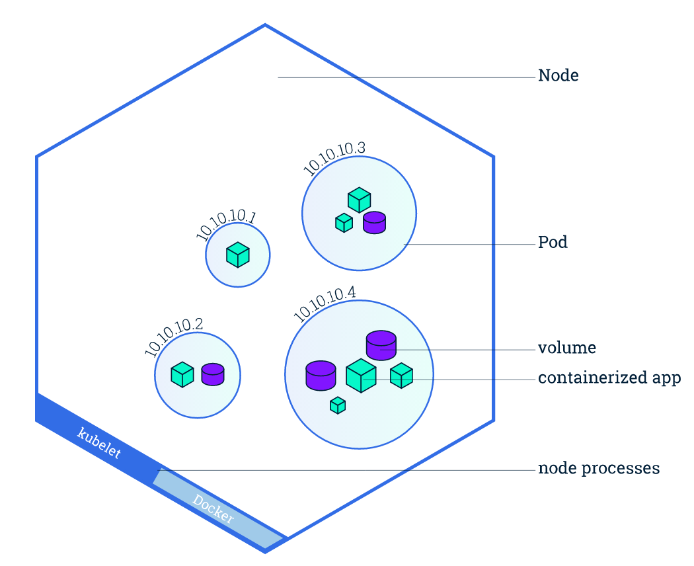

kubernetes Node
Node 是 Pod 真正运行的主机，可以物理机，也可以是虚拟机。为了管理 Pod，每个 Node 节点上至少要运行 docker、kubelet 和 kube-proxy 服务。

默认情况下，kubelet 在启动时会向 master 注册自己，并创建 Node 资源。
每个Node都包括以下状态信息
- 地址(Addresses)：包括 hostname、外网 IP 和内网 IP
- 条件(Condition)：包括 OutOfDisk、Ready、MemoryPressure 和 DiskPressure
- 容量(Capacity)：Node 上的可用资源，包括 CPU、内存和 Pod 总数
- 基本信息(Info)：包括内核版本、容器引擎版本、OS 类型等
例如：
$ kubectl describe node 172.20.32.127
Name: 172.20.32.127
Roles: <none>
Labels: beta.kubernetes.io/arch=amd64
beta.kubernetes.io/os=linux
kubernetes.io/fluentd-ds-ready=true
kubernetes.io/hostname=172.20.32.127
Annotations: node.alpha.kubernetes.io/ttl=0
volumes.kubernetes.io/controller-managed-attach-detach=true
Taints: <none>
CreationTimestamp: Sun, 17 Jun 2018 20:46:23 +0800
Conditions:
Type Status LastHeartbeatTime LastTransitionTime Reason Message
---- ------ ----------------- ------------------ ------ -------
OutOfDisk False Fri, 19 Oct 2018 17:49:36 +0800 Sun, 17 Jun 2018 20:48:57 +0800 KubeletHasSufficientDisk kubelet has sufficient disk space available
MemoryPressure False Fri, 19 Oct 2018 17:49:36 +0800 Fri, 07 Sep 2018 08:25:56 +0800 KubeletHasSufficientMemory kubelet has sufficient memory available
DiskPressure False Fri, 19 Oct 2018 17:49:36 +0800 Fri, 07 Sep 2018 08:25:56 +0800 KubeletHasNoDiskPressure kubelet has no disk pressure
Ready True Fri, 19 Oct 2018 17:49:36 +0800 Fri, 07 Sep 2018 08:25:56 +0800 KubeletReady kubelet is posting ready status
Addresses:
InternalIP: 172.20.32.127
Hostname: 172.20.32.127
Capacity:
cpu: 4
memory: 32946920Ki
pods: 110
Allocatable:
cpu: 4
memory: 32844520Ki
pods: 110
System Info:
Machine ID: 18d66e3d8e761558137b041965257d8b
System UUID: 18D66E3D-8E76-1558-137B-041965257D8B
Boot ID: 9a9e4cf7-97ca-4d3e-99aa-39be7a232901
Kernel Version: 3.10.0-862.3.2.el7.x86_64
OS Image: CentOS Linux 7 (Core)
Operating System: linux
Architecture: amd64
Container Runtime Version: docker://18.3.0
Kubelet Version: v1.9.6
Kube-Proxy Version: v1.9.6
PodCIDR: 192.170.11.0/24
ExternalID: 172.20.32.127
Non-terminated Pods: (26 in total)
Namespace Name CPU Requests CPU Limits Memory Requests Memory Limits
--------- ---- ------------ ---------- --------------- -------------
kube-system calico-node-xmsj8 250m (6%) 0 (0%) 0 (0%) 0 (0%)
kube-system elasticsearch-fluentd-v2.0.2-2b4bj 100m (2%) 300m (7%) 200Mi (0%) 500Mi (1%)
kube-system kube-dns-766cb58688-m59dv 260m (6%) 0 (0%) 110Mi (0%) 170Mi (0%)
monitoring prometheus-node-exporter-kc27n 0 (0%) 0 (0%) 0 (0%) 0 (0%)
st-f1-pack bz-bl-mdm-web.7.0.72-jre7-v7n24 0 (0%) 0 (0%) 0 (0%) 0 (0%)
st-f1-pack bz-bl-static-web.7.0.72-jre7-ggb6w 0 (0%) 0 (0%) 0 (0%) 0 (0%)
st-f1-pack bz-blf1-common-web.7.0.72-jre7-8t4qp 0 (0%) 0 (0%) 0 (0%) 0 (0%)
zabbix zabbix-agent-4mwgz 0 (0%) 0 (0%) 0 (0%) 0 (0%)
Allocated resources:
(Total limits may be over 100 percent, i.e., overcommitted.)
CPU Requests CPU Limits Memory Requests Memory Limits
------------ ---------- --------------- -------------
610m (15%) 300m (7%) 310Mi (0%) 670Mi (2%)
Events: <none>